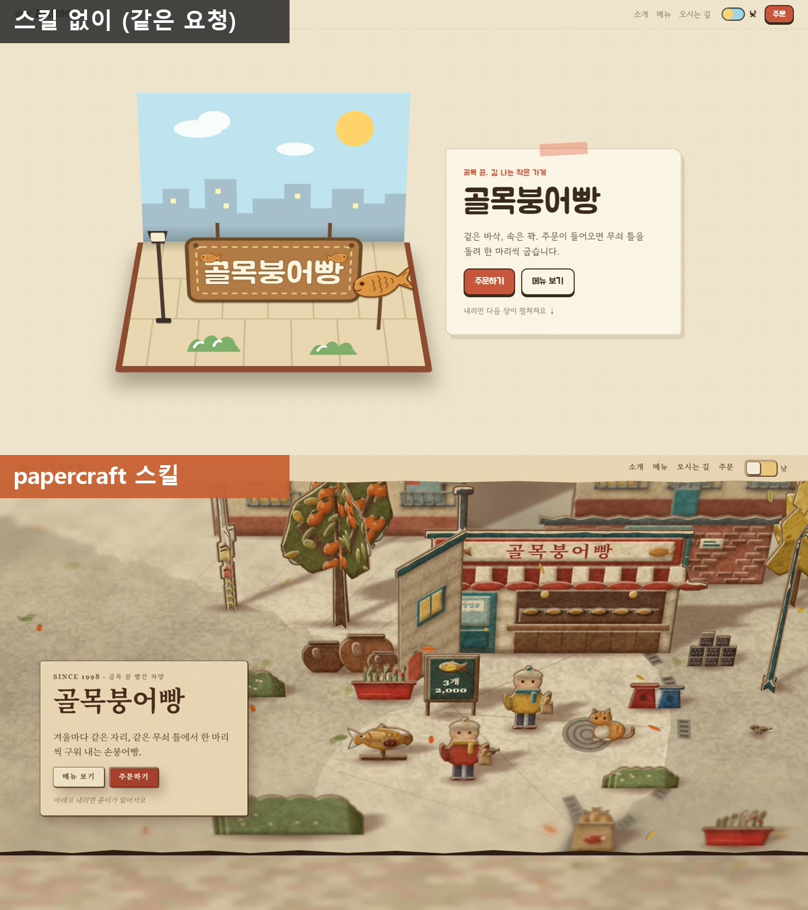
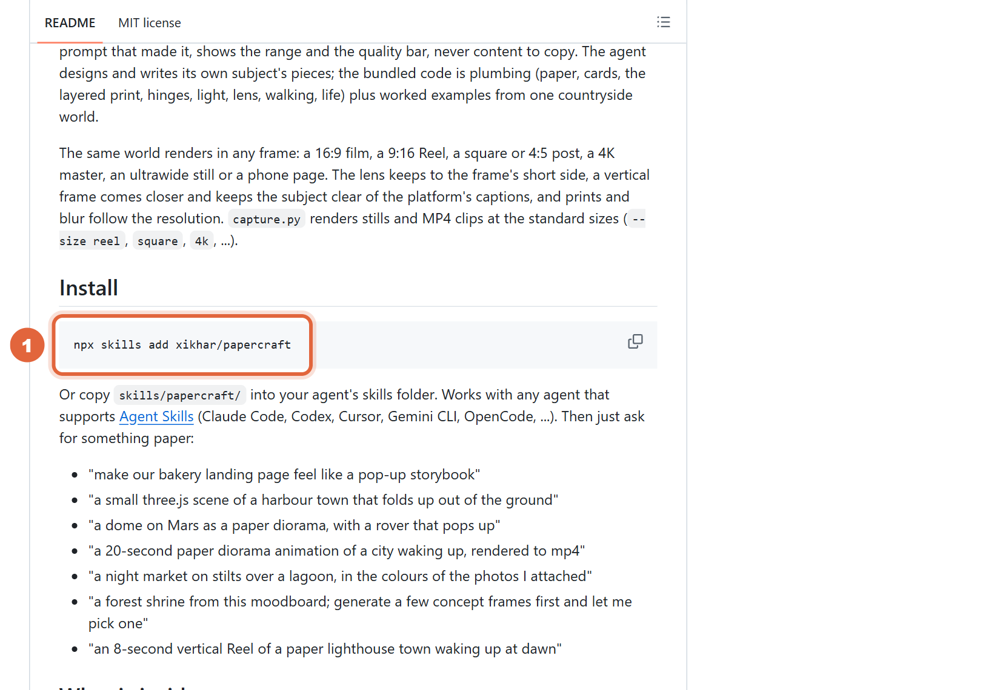
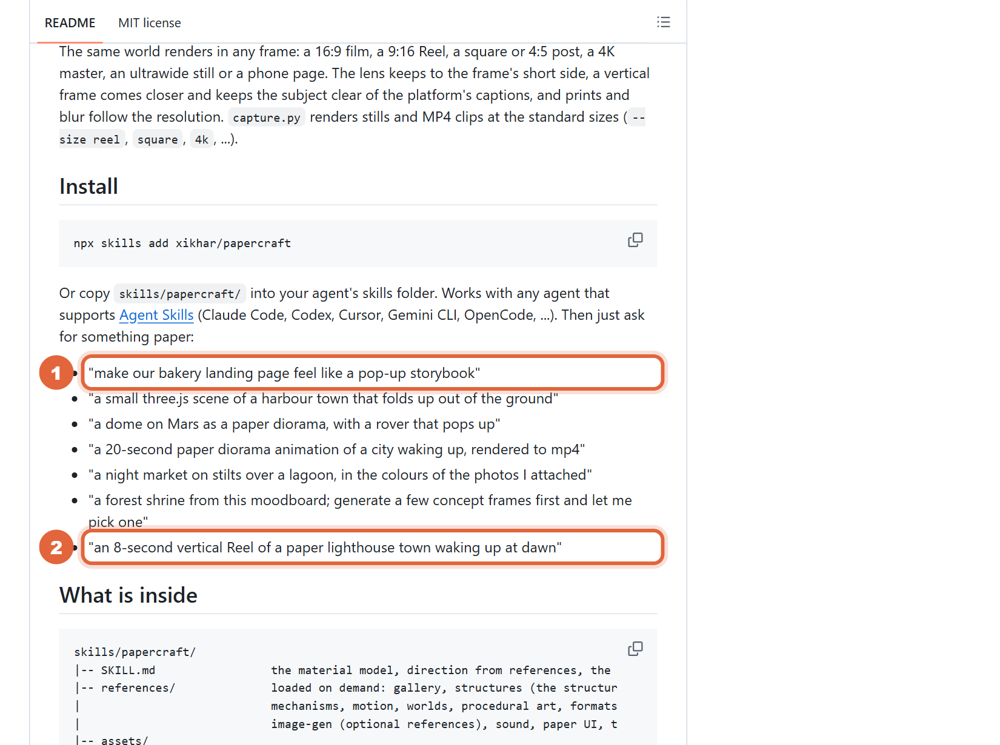
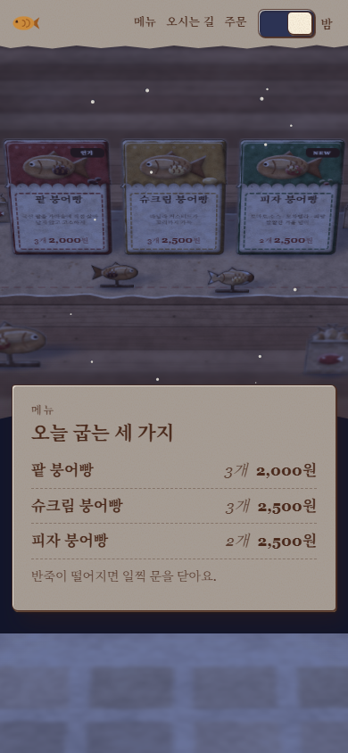
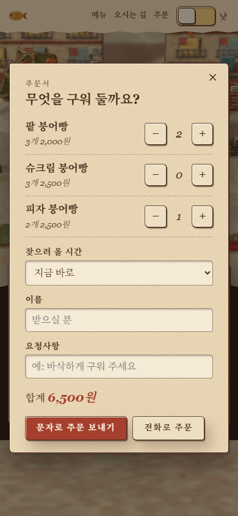

클로드 코드에 붙이는 무료 스킬(MIT)이에요. 웹페이지·게임·애니메이션을 종이를 오려 세운 팝업북처럼 지어요 — 종이 결 있는 조각, 잘린 테두리, 그 세상 색을 따라가는 그림자, 위아래가 흐린 미니어처 렌즈, 경첩처럼 접혀 일어서는 움직임. 실제로 나온 브라우저 종이 게임에서 뽑은 규칙이 들어 있어요. 아래는 같은 요청('붕어빵 가게 홈페이지를 종이 팝업북처럼')을 스킬 없이 / 스킬로 직접 돌린 결과예요. 가게는 시연용으로 지어낸 곳이에요.

터미널에서 npx skills add xikhar/papercraft (1). 또는 저장소의 skills/papercraft 폴더를 프로젝트의 .claude/skills 안에 복사해요. 클로드 코드를 다시 열면 /papercraft 가 보여요.

/papercraft 뒤에 만들 것(가게 홈페이지·청첩장·포트폴리오·게임), 장소와 계절·시간, 꼭 넣을 칸을 적어요. 사진이나 무드보드를 같이 주면 그 색과 분위기를 종이로 다시 지어요. 이미지 생성은 시킬 때만 쓰고, 나머지는 전부 코드로 그려요.

시연에선 약 50분 걸렸어요(스킬 없이는 약 14분). 클로드가 규칙 문서를 읽고 조각을 그린 뒤, 화면을 찍어 measure.py로 재고(초점 띠·빈 바닥·색·흐림 등 20가지), 걸린 곳을 고쳐요. 시연에선 '가운데가 비어 보인다'가 걸려서 조각을 더 넣었어요.
결과 폴더에서 python -m http.server 를 실행하고 크롬으로 http://localhost:8000 을 열어요. 파일을 더블클릭하면 브라우저가 스크립트를 막아 빈 화면이 나와요. 처음 뜰 때 종이 조각을 그리느라 몇 초~25초 걸려요.
칸이 화면에 들어오면 먼 조각부터 경첩처럼 접혀 일어서고, 화면 밖으로 나가면 다시 접혀요. 요청에 '내리면 칸마다 종이 조각이 일어서게'를 넣었어요.
요청에 '낮·밤 바꾸기 버튼'을 넣으면 오른쪽 위 스위치가 생겨요. 밤엔 가게 전구·창문·가로등이 켜지고 낙엽 대신 종이 눈이 내려요.

'이 페이지가 일어서는 모습을 세로 9:16 8초 영상으로 뽑아 줘'라고 하면 스킬의 capture.py로 1080×1920 MP4를 뽑아요(고정 시계로 한 장씩 찍어서 끊김이 없어요). 직접 할 땐: python .claude/skills/papercraft/scripts/capture.py . reel:video=8,30 --size reel --page index.html
'방향키로 걷는 캐릭터' 같은 요청이면 three.js 종이 세상에 걷는 인형을 넣어요. 스킬에 든 기본 템플릿(시골 마을)을 열어 보면 감이 와요: npx serve .claude/skills/papercraft/assets 뒤 /templates/popup-3d/ 를 열고 방향키나 WASD.
시연 페이지는 주문하기를 누르면 종이 주문서가 아래서 올라오고, 수량을 고르면 합계가 계산되고, 문자 앱에 주문 내용이 채워져요. 서버가 없어서 실제 전송은 손님이 문자를 보내는 방식이에요. 주소·전화번호·소개 문구는 클로드가 임시로 지어 넣으니 꼭 바꿔요.

터미널
npx skills add xikhar/papercraft
클로드 코드, 빈 폴더에서
/papercraft 동네 붕어빵 가게 '골목붕어빵' 홈페이지를 종이 팝업북처럼 만들어 줘. 가게 소개, 메뉴(팥·슈크림·피자 붕어빵), 오시는 길, 주문 버튼까지 한 장. 화면을 내리면 칸마다 종이 조각(간판·메뉴 카드·나무·가게 건물)이 접혀 일어서게 하고, 낮·밤 바꾸기 버튼도 넣어 줘. 이 폴더 안에 만들고 시작 페이지는 index.html. 다 되면 이 페이지가 일어서는 모습을 세로 9:16 8초 영상 reel.mp4로도 뽑아 줘. 묻지 말고 끝까지 해 줘.
괄호만 바꿔요
/papercraft (내 가게·내 이름) 홈페이지를 종이 팝업북처럼 만들어 줘. (계절·시간·분위기). 칸은 (소개·메뉴·오시는 길·연락처). 내리면 칸마다 종이 조각이 접혀 일어서게. 시작 페이지는 index.html.
사진을 폴더에 넣고
/papercraft 이 폴더의 사진들 색과 분위기로, (만들 것)을 종이 팝업북처럼 만들어 줘
다 만든 뒤
이 페이지가 일어서는 모습을 세로 9:16 8초 영상 reel.mp4로 뽑아 줘
결과 폴더에서
python -m http.server
설치·문서
https://github.com/xikhar/papercraft
도움이 되셨다면
@ai.antenna.kr
에서 바로 쓰는 AI 활용법을 계속 올립니다.